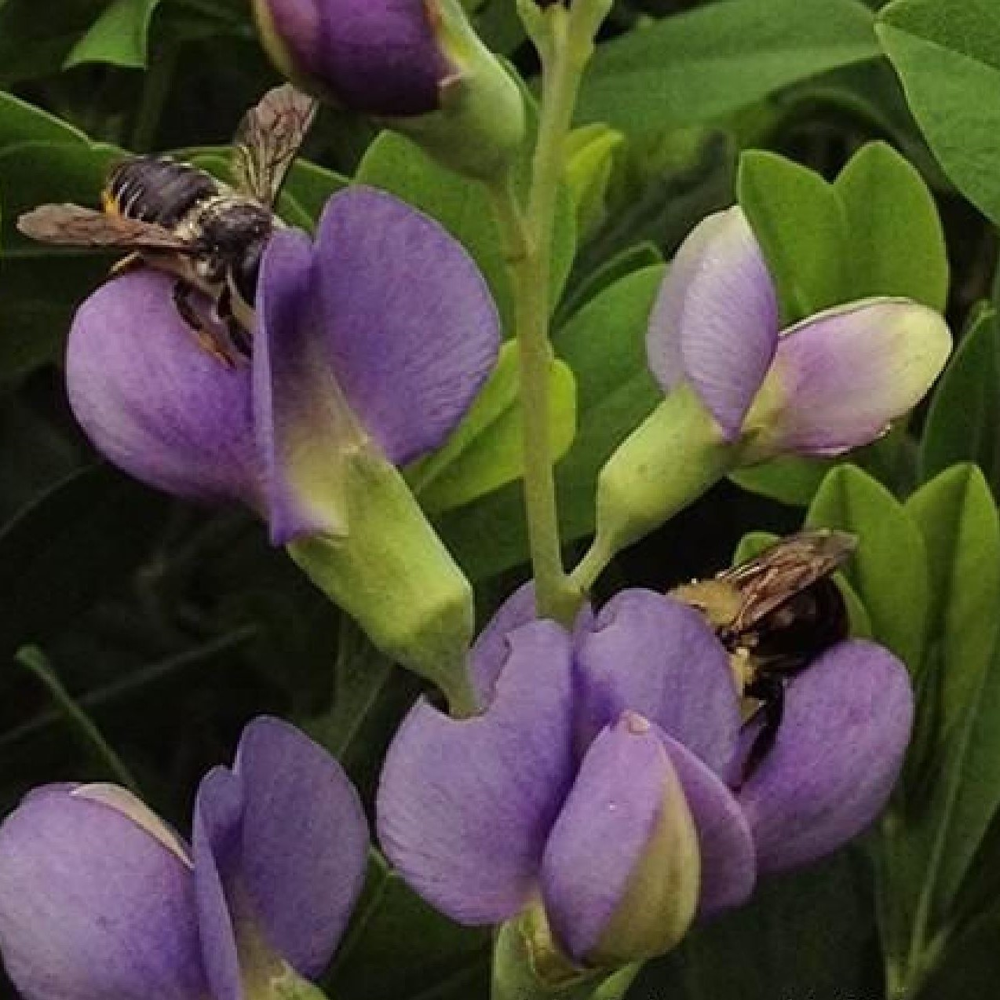

Section E
Asclépiade commune
Comestibilité : Pousse, bouton floral, jeune fruit ⚠
Mise en garde : CONTIENT DU LATEX TOXIQUE : DOIT ÊTRE PLONGÉ DANS DEUX EAUX BOUILLANTES AVANT CONSOMMATION!
Période de floraison : Juillet - Août
Cette plante indigène au parfum délicieux est essentielle à la reproduction du
courageux papillon Monarque, celui qui traverse le Golfe du Mexique pour aller se
reposer dans les forêts de sapins sacrés du Michoacan. Ses pousses se mangent comme
l'asperge au printemps (récoltées lorsqu'elles ont moins de 20 cm). Les boutons
floraux s'utilisent comme du brocoli. Les jeunes feuilles, celles au bout des tiges,
s'utilisent comme des épinards. Les fruits se consomment très jeunes, alors qu'ils
ont 2-4 cm de long, sinon, ils deviennent fibreux. Ils sont délicieux marinés. La
plante performe mieux sur un sol bien sec, elle devient même assez agressive !

Agastache
Comestibilité : Feuille ✔
Période de floraison : Juillet - Septembre
L'agastache fenouil est une vivace de courte vie qui se ressème abondamment.
Elle est indigène au Québec. Ses feuilles au goût anisé servent à faire une agréable
tisane, mais elles gagnent à être utilisées plus largement, crues dans les salades
ou cuites dans certains mets. L'agastache produit de très nombreuses fleurs qui
attirent les insectes pollinisateurs comme les abeilles, les bourdons et les
papillons. Facile de culture, elle tolère bien la sécheresse.
Chervis
Comestibilité : Tubercule ✔
Période de floraison : Juillet
Le chervis était consommé au Moyen-Âge puis est tombé dans l’oubli. Est-ce
parce qu’il faut quand même travailler fort pour nettoyer ses tubercules? Parce
que son goût, entre celui de la carotte et du panais en vaut l’effort! Vous
pouvez les déguster crus, les bouillir, les rôtir ou les ajouter dans la soupe.
Les tubercules se récoltent tard, quand le feuillage est mort. Ses toutes petites
fleurs en ombelles attirent une grande variété d’insectes.

Lupin indigo
Comestibilité : Aucune ❌
Période de floraison : Juillet - Août
Plante fixatrice d'azote très ornementale avec ses très longs épis de fleurs
bleutées. Sa hauteur peut en faire la vedette d'une section de votre aménagement.
Elle ressemble beaucoup au lupin qu'on voit souvent dans les jardins (qui est
du genre Lupinus et non pas Baptisia...), sans attirer les pucerons comme ce
dernier. Une bonne raison de l'y préférer !
Sureau du Canada
Comestibilité : Fleur, fruit ✔
Période de floraison : Mai - Juin
Magnifique arbuste indigène qui produit des fleurs blanches en juin.
Parfumées, ces fleurs sont comestibles et médicinales. On aime en faire des
crêpes. Et du sirop qu’on déguste avec du citron - le breuvage le plus
rafraîchissant de de l’été ! Les fruits qui suivent en août et septembre
ont tout autant de vertus. En fait, c’est un excellent tonique immunitaire,
très doux, qu’on peut utiliser avec les enfants.

Échinacée
Comestibilité : Aucune ❌
Période de floraison : Juillet - Août
Plante médicinale bien connue, on attend qu'elle ait 3 ans avant de
récolter sa racine pour en faire une teinture-mère aux propriétés
immunitaires. En attendant, on profite de ses magnifiques fleurs
pourpres qui plaisent autant à l'œil qu'aux insectes bénéfiques du jardin.

Hémérocalle
Comestibilité : Bouton floral, fleur, tubercule ⚠
Mise en garde : Les personnes qui ne sont pas accoutumées à consommer l’hémérocalle
peuvent subir ses effets laxatifs : faire des tests progressifs à petite quantité
Période de floraison : Juillet - Août
Voilà vraiment un légume vivace qui ne demande pas d’entretien.
Bien que les fleurs soient sucrées et très élégantes dans la salade,
c’est plutôt les boutons floraux qui retiennent notre attention. Bien
croquants, ils s’ajoutent dans un sauté. On peut également les
sécher s’ils sont cueillis alors qu’ils sont encore bien fermés.
Attention! Les personnes qui ne sont pas accoutumées à consommer
l’hémérocalle peuvent subir ses effets laxatifs. Allez-y à petite dose,
on vous parle par expérience ! Les jeunes tubercules sont comestibles
et auraient une saveur de noisette. Nous n’y avons pas goûté.

Consoude de Russie Bocking 4
Comestibilité : Aucune ❌
Période de floraison : Mai - Juin
La consoude de Russie, c’est peut-être LA plante de la permaculture,
et elle n’est même pas comestible ! On la cultive pour plusieurs autres raisons,
notamment pour produire son propre paillis. Elle est parfaite pour ce rôle,
notamment parce qu’elle pousse très rapidement. On peut la tailler au ras du
sol plusieurs fois dans l’été. Elle est un couvre-sol extrêmement efficace par
la densité de son feuillage. Finalement, elle a les mêmes propriétés
médicinales que la consoude officinale, très cicatrisante et pour les maux
de la peau, sans le côté terriblement envahissant.

Chou crambe
Comestibilité : Pousses, feuilles, boutons floraux, fleurs, racines ✔
Période de floraison : Juin - Juillet - Août
Il y a des légumes vivaces dont le goût nous a déçu, mais il y en a qui
nous ont enchanté. Et le chou crambe est clairement dans notre top! Les
pousses printanières sont comestibles, le feuillage se cuisine comme le
kale ou le collard, et surtout il produit des minis brocolis savoureux. Il
faut simplement cueillir les bouquets de boutons floraux avant que les
fleurs (comestibles!) n’éclosent. Vous devriez quand même en laisser
quelques-unes fleurir pour ne pas vous priver de ce beau spectacle tout
blanc et récupérer quelques graines au passage ! Cette massive brassicacée
n’est pas autant la cible de la piéride du chou que ses pauvres cousines,
raison de plus de l’adopter. Attention de ne pas le planter près de plantes
plus agressives que lui, il n’est pas fameux contre la compétition.

Thym commun
Comestibilité : Feuille ✔
Période de floraison : Juin - Août
Le thym, ce n’est pas compliqué, ça va dans TOUT : les soupes, le
pot-au-feu, la blanquette, les marinades, le fond, les ragoûts, les
grillades, la volaille, le rôti, le gigot, les légumes, le riz, les
farces, le poisson, les œufs, les salades, les vinaigrettes, l'alcool,
le cassoulet, le bœuf bourguignon, la sauce tomate, les lentilles...
Vous trouverez sûrement autre chose. Il garde très bien son parfum une
fois séché et peut mijoter longtemps dans les plats sans devenir fade.
En plus, il est bourré de propriétés médicinales. Il est utile pour toutes
les affections des voies respiratoires, en plus d'être tonique et
antioxydant. Mais franchement, on peut boire cette tisane juste pour
son goût!

Aspérule odorante
Comestibilité : Fleur ⚠
Mise en garde : Peut causer maux de tête, somnolence et vertiges : à utiliser à petite dose
Période de floraison : Mai - Juin - Juillet
L’aspérule odorante, lorsqu’on en froisse les feuilles, a une
délicieuse odeur de foin coupé très apparenté à celle du foin
d’odeur, certains diront à celle de la vanille. C’est pour cette
raison que l’on trouve parfois des recettes de desserts aromatisés
à l’aspérule odorante. Les fleurs sont utilisées en herboristerie
pour leurs propriétés calmantes, anti-stress et pour lutter contre
l’insomnie. C’est une plante qu’on utilise à petite dose car elle
est très puissante et peut causer des maux de tête, de la
somnolence et des vertiges. Plantée serré, on peut en faire un
merveilleux couvre-sol d’ombre.
Ronce odorante
Comestibilité : Fruit ✔
Période de floraison : Juillet
Cet arbuste indigène produit un fruit ressemblant à une framboise
aplatie. Son goût, dont vous pourrez profiter en août et septembre,
en est légèrement différent. Bien que cet arbuste porte le nom de
« ronce », il n’en porte pas les épines. Son feuillage vert clair
rappelle un peu celui de l’érable.
Sceau-de-Salomon
Comestibilité : Pousse, racine ✔
Période de floraison : Mai - Juin
Le Sceau-de-Salomon est une plante élégante que l’on retrouve souvent
dans les plates-bandes ombragées. Ses grandes tiges s’arquent toutes
dans la même direction pour former un bosquet délicat, surtout lorsque
s’y ajoutent ses fleurs en forme de clochette. Les pousses printanières
se consomment à la manière des asperges dont elles ont le goût. On les
cueille avant que ne se déploie la rosette de feuilles qu’elles portent.
Les racines ont un goût de panais et sont riches en amidon. Séchées et
réduites en poudre, elles peuvent servir à épaissir les sauces. On ne
s’est pas donné la peine d’essayer !
Bleuetier en corymbe « Northblue »
Comestibilité : Fruit ✔
Période de floraison : Mai - Juin
Les bleuetiers en corymbe sont des géants, lorsqu’on les compare aux
petits bleuetiers sauvages. Ils produiront des fruits pendant 20-30 ans.
Bleuetier en corymbe « Northland »
Comestibilité : Fruit ✔
Période de floraison : Mai - Juin
Les bleuetiers en corymbe sont des géants, lorsqu’on les compare aux
petits bleuetiers sauvages. Ils produiront des fruits pendant 20-30 ans.

Bleuetier en corymbe « Patriot »
Comestibilité : Fruit ✔
Période de floraison : Mai - Juin
Les bleuetiers en corymbe sont des géants, lorsqu’on les compare aux
petits bleuetiers sauvages. Ils produiront des fruits pendant 20-30 ans.
Rudbéckie hérissée
Comestibilité : Aucune ❌
Période de floraison : Août - Septembre
Cette plante indigène de l’Amérique du Nord fait plaisir à voir, elle
qui fleurit jusqu’à tard dans l’automne. Formant de joyeux massifs de
fleurs jaunes, elle attire les abeilles, les papillons et même les oiseaux
qui se nourrissent de ses graines. Les Amérindiens utilisaient un thé de
ses racines pour traiter le rhume, mais cet usage n’est pas passé à
l’herboristerie moderne.